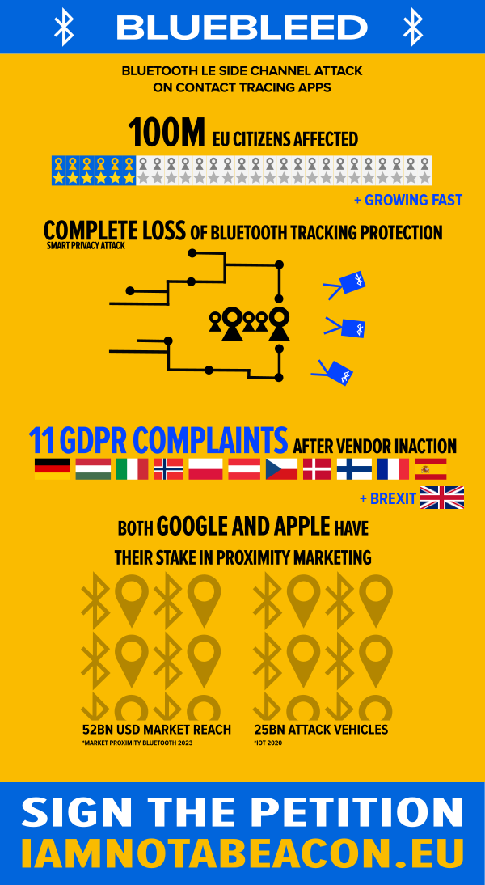

DIES IST EIN AI ÜBERSETZTER TEXT.

Sehr geehrte Verfechter des Datenschutzes und rücksichtsvolle digitale Bürger, mein Name ist Peter Steiner und ich habe eine wichtige Geschichte zu erzählen. Am 11. Juni habe ich der Gemeinschaft für Informationssicherheit ein kritisches Thema offenbart. Ich entschied mich, sofort an die Öffentlichkeit zu gehen, weil die Angelegenheit dringend war. Ich rechnete mit Verzögerungen bei der Behandlung der Situation mit den beiden betroffenen Anbietern: Google und Apple. Gemeinsame Taktik.
In meiner Naivität leitete ich dennoch die Kommunikation mit ihren Sicherheitsabteilungen ein, um ihnen bei der Arbeit an der Angelegenheit zu helfen. Google-Ingenieure berichteten in jüngsten Untersuchungen über mangelnde Kenntnisse über den Gesamtumfang der Nachverfolgung bis zum Bundesstaat Arizona. Dies entspricht meinem damaligen Eindruck. US-Unternehmen "verstehen" das europäische Wertesystem einfach nicht. Oder sogar ihre eigene riesige Profilierungsmaschine. Die Bedenken meines Schwachstellenberichts wurden sogar von den Ingenieuren in unserem Chat bestätigt. Dennoch, die Mächte, die beschlossen werden, das Thema zu ignorieren.
Dies hat mich gezwungen, eine Beschwerde bei den Datenschutzbehörden aller betroffenen EU-Länder und des Vereinigten Königreichs einzureichen. Dieser Schritt ist mir nicht leicht gefallen. Mein Standpunkt in Bezug auf dieses Thema ist fatal. Die Offenlegung (CVE-2020-13702) steht auf dem höchstmöglichen Verwundbarkeitswert von 10,0. Betroffen sind derzeit potenziell bis zu 100.000.000 Bürger der EU und Großbritanniens.
Während wir aktiv an einer Lösung des Problems arbeiten, unterlasse ich die endgültige öffentliche Offenlegung des GDPR. Unsere Datenbehörden brauchen bei einer so sensiblen Angelegenheit Zeit. Die technische Komplexität ist kompliziert. Ich stehe auf einer Hardliner-Position zum GDPR und stelle eine Verletzung von insgesamt 19 Artikeln fest. Rechtsexperten könnten in einigen Fällen anderer Meinung sein.
Aber Tatsache ist: Wir haben ein Problem mit der digitalen Kontaktverfolgung. Ich bin nicht der Erste, dem das auffällt. Wir haben auch ein Problem mit Daten, die aus unseren nationalen Territorien verbracht werden. Der EU-Gerichtshof hat entschieden. Und wir haben definitiv ein Problem mit dem Konzept des "Data Protection by Design". Dies ist nicht nur für kalifornische Technikgiganten von Bedeutung.
Der Missbrauch monopolistischer Druckmittel, um Marktdruck auszuüben, breitet sich jedoch von eben dieser Region aus über die ganze Welt aus. Vielleicht gibt es einen Grund, warum Kalifornien gerade jetzt buchstäblich in Flammen steht. Ich habe den Eindruck, dass wir derzeit eine Sackgasse in unserem digitalen Geschäft sehen. Ich ermutige alle Global Player, endlich für die Bürgerrechte einzutreten. Und endlich nach einer gemeinsamen Basis zu suchen. Auch die Amerikaner beginnen die Gefahren eines unkontrollierten digitalen Wachstums zu spüren. Freiheit für Marktkapitalisierung zu verkaufen, ist kein nachhaltiger Kurs.
Ich gehe ein extremes persönliches Risiko ein, wenn ich diese Agenda vorantreibe, aber ich bin bereit, die Konsequenzen im Interesse unserer zukünftigen Demokratie zu tragen. Bitte zeigen Sie Ihre Unterstützung, indem Sie die folgende Petition unterschreiben. Leiten Sie sie an Ihre aufmerksamen Freunde weiter. Klären Sie Ihre Familie über Privatsphäre und Datenschutz auf. Die digitale Singularität ist im Gange. Die KI-Revolution ist im Gange. Der 3.0. Weltkrieg findet in diesem Moment online hinter dem Schleier statt. Wir müssen Veränderungen auslösen. Die Zeit nähert sich dem Punkt, an dem es kein Zurück mehr gibt.
Vielen Dank, dass Sie an der obigen Petition teilgenommen haben.
Wenn Sie immer noch bereit sind, weiterzulesen, dann lassen Sie mich zur Lösung kommen. Wir müssen das GDPR in Europa in Ordnung bringen. Aber auch die Amerikaner müssen ihr System der digitalen Rechte ändern. In Afrika sehen wir keine Mittel zum Schutz der digitalen Bürgerrechte. Andere katastrophale Themen streifen dort umher. Russland. Indien. Die Geschichte ist überall auf der Welt die gleiche.
Sie fragen sich jetzt vielleicht, warum ich die größte Nation der Welt in dieser Liste übersprungen habe. China. Die Sache ist die, und das wird für die meisten von Ihnen eine Überraschung sein: Sie haben es geschafft, mit ihren Cybersicherheitsgesetzen ein ordentliches Datenschutzregime durchzusetzen. In den letzten Jahren war China nicht nur eine funkelnde Quelle für disruptive Innovationen. Sie haben auch ein hohes Tempo vorgelegt, um ihre Hyper-Wachstumswirtschaft mit der Regierungspolitik in Einklang zu bringen.
Wir mögen in einigen grundlegenden politischen Überzeugungen anderer Meinung sein. Aber es steht uns nicht zu, die Situation von 1,4 Milliarden Menschen zu beurteilen, die ihr Leben in ihrem spezifischen historischen Kontext leben. China hat die Armut fast vollständig beseitigt. Ich nehme das als einen Parameter für eine hochgradig funktionierende Gesellschaft. Während die derzeitige republikanische US-Führung tödlich versagte, während die britische Regierung einige sehr falsche Weichenstellungen vornahm, ist China in der Lage gewesen, ihren COVID-19-Ausbruch überaus gut zu bewältigen. Besser als der Großteil Europas.
Ich bitte Sie, mir unvoreingenommen zu folgen. Lassen Sie uns herausfinden, warum das so sein könnte. Die Bewältigung einer Pandemie ist eine äußerst schwierige Aufgabe. Die traditionellen Strukturen des Gesundheitswesens sind nicht in der Lage, das hochgradig anpassungsfähige und dynamische Virus zu versorgen. Daten sind das Einzige, was zur Bekämpfung dieses Feindes unerlässlich ist. Und Daten sind das, was China im Überfluss hat.
Wir experimentieren mit der digitalen Kontaktverfolgungstechnologie, die von der Konstruktion her kaputt ist. Bluetooth stimmt nicht mit der Genauigkeit überein, die notwendig ist, um Ergebnisse zu erzielen. Gleichzeitig verkennen wir, dass es sich bei den Daten, die benötigt werden, um COVID-19 von einem Amoklauf abzuhalten, in Wirklichkeit um wichtige Daten zur öffentlichen Gesundheit handelt. Wir halten es nicht für zu aufdringlich für unsere Privatsphäre, in ein MRT einzudringen, wenn wir eine tödliche Krankheit befürchten. Warum nehmen wir die COVID-19-Situation nicht so ernst?
Experten sagen uns, dass das Knifflige an einer Viruspandemie ist, dass sie anscheinend jeden anderen außer uns betrifft. Führungspersönlichkeiten, denen es an Visionen mangelt, veranstalten riesige Kundgebungen mit ihren unmaskierten Anhängern. Besorgte, aber beunruhigte Bürger nehmen an großen Protesten teil und zeigen eine provozierende Ignoranz gegenüber den damit verbundenen Risiken. Und während wir mit Geduld weiter aufklären können, werden die Menschen immer noch Menschen sein. Unsere post-faktische digitale Gesellschaft wird immer eine Mischung aus allen möglichen radikalen Standpunkten sein.
Wenn wir nach China zurückkehren, können wir viel darüber lernen, wie wir die Fähigkeit der Seuchenbekämpfung noch umsetzen können. Sie stellen ihrem Gesundheitssystem genaue mobile Standortdaten zur Verfügung. Wir lassen Google unsere Standortdaten sammeln, auch wenn wir uns dagegen entscheiden, werden wir immer noch in großen Unternehmensdaten erfasst. Aber wir stellen die Daten nicht denjenigen zur Verfügung, die Leben retten könnten.
China ermöglicht es seinem Kameraüberwachungssystem, Gesundheitsprobleme zu erkennen. Sie installieren Sensortore an Schulen und öffentlichen Plätzen. Sie setzen Drohnen ein, um die erzieherische und sensorische Wirkung zu verstärken. Dieses Land hat die Daten, die für den Kampf um das Grundrecht auf Leben notwendig sind, nicht genutzt. Als Datenschützerin verstehe ich, warum wir uns nicht für die gleiche Richtung entschieden haben. Unser Wertesystem lässt es noch nicht zu, dass eine so tief greifende Überwachungstechnologie eingesetzt wird. Unsere verfassungsmäßigen Rechte stehen für dieses unsichtbare Szenario in einem tiefen Konflikt. Aber wir können beide Probleme lösen. Eines nach dem anderen.
Russland ist es bereits gelungen, den Startschuss für sein Impfprogramm zu geben. Andere Länder werden folgen, wahrscheinlich Ende des Jahres. Wir haben eine aufgehende Sonne am Horizont. Ich schlage vor, dass wir in den sauren Apfel beißen und vorübergehend zumindest die grundlegenden Standortdaten freischalten, wie sie bereits auf der Ebene der Anbieter und der Mobilfunkanbieter erhoben wurden. Eine schnelle Lösung für die defekten Track-and-Trace-Apps. Möglicherweise müssen wir einige statistische Methoden anwenden, um der Standortvarianz Rechnung zu tragen, aber das ist genau das, was wir für das bestehende Bluetooth-basierte System ohnehin brauchen würden, um Wirkung zu zeigen. Virenforscher haben Erfahrung mit diesen Methoden. Wir können die Funktionalität in kurzer Zeit auf eine andere Effizienzstufe bringen.
Ich schlage auch vor, dass wir ein proaktives Warnsystem hinzufügen, um eine bessere Krankheitsprävention einzuleiten. Die europäischen Länder haben bereits damit begonnen, ein Ampelsystem einzuführen, das das regionale Infektionsrisiko anzeigt. Wir können Mobiltelefone, die sich zwischen Mobilfunktürmen bewegen, problemlos mit Push-Alarmsignalen ausstatten, um dies zu erreichen. Die Telekommunikationsausrüstung ist darauf vorbereitet. Wir alle sind an SMS-Benachrichtigungen beim Passieren von Ländergrenzen gewöhnt. Warum implementieren wir nicht eine Geofencing-Lösung, die Infektionsdaten sammelt, und schließen sie an die gleichen Systeme an?
Verwechseln Sie jedoch nicht die sofortige Ankunft von Impfstoffen mit einer schnellen Lösung. Laut der leisen, aber starken Stimme von Dr. Fauci ist die Chance, mit unserer ersten Impfstoffrunde eine Herdenimmunität zu erreichen, gering bis gar nicht. Die Menschen werden die Impfung aus verschiedenen Gründen ablehnen. Die Wirksamkeit wird nicht 100% betragen. Aus diesem Grund höre ich hier nicht auf.
Wir brauchen eine sichere Datenmatrix, die sich über die Grenzen hinweg erstreckt, um das wahre Potenzial der Daten auszuschöpfen. IBM hat kürzlich einen Durchbruch in der homomorphen Verschlüsselung erreicht. Ein Technologiesprung, der weitgehend verstummt ist. Mit Instant Messaging nutzen wir bereits sichere verteilte Datenverarbeitung. Darüber hinaus wird die homomorphe Verschlüsselung es uns ermöglichen, eine Null-Wissensberechnung zu erreichen. An diesem Punkt können wir Gesundheitsdaten sicher von lokal gesicherten Silos an entfernte Ziele übertragen.
Dies wird den regionalen Datenaustausch erleichtern, der für eine groß angelegte Pandemieprojektion unerlässlich ist. Wir müssen über Wellenereignisse und Superspreader Bescheid wissen, sobald sie eintreten. Und Viren machen nicht an Grenzen halt. Die Aufnahme von Standortdaten und anderen relevanten Metainformationen in die medizinische Gesetzgebung wird uns in die Lage versetzen, sie auf kommunaler Ebene sicher abzurufen und zu speichern. Wir verfügen bereits über eine Fülle von persönlichen Daten bei Gesundheitsorganisationen. Wir sollten die bestehenden geschützten Datenspeicher nutzen. Lassen Sie uns jetzt die Daten anzapfen, die im chinesischen Kampf gegen die Pandemie helfen. Wir können sie sehr bald sicher weiterleiten.
Sicher, diese Änderung ist nicht so einfach wie meine ursprünglichen Vorschläge. Aber die enormen Vorteile sind den Schweiß und die Tränen wert. Und glauben Sie mir oder nicht, ich habe alle Lösungen für diese Probleme in meiner Schublade. Experten sagen uns, dass wir auch nach der Verfügbarkeit von Impfstoffen noch mindestens ein oder zwei Jahre mit kritischer Infektionsrate haben werden. Genug Zeit, um die vorgeschlagenen grundlegenden Veränderungen umzusetzen und immer noch viele, viele Leben zu retten. Und in der Folge weniger befähigten Regionen helfen, ihre anderen biologischen Kriege zu führen.
Lassen Sie mich mit einer letzten Tatsache abschließen: Wussten Sie, dass es auf der Erde mehr Viren gibt als Sterne im Universum? Wir sind nur eine Milliarde. Die Menschheit hat keine Chance, diesen Kampf zu gewinnen, wenn wir nicht als Einheit zusammenstehen. Mein Name ist Peter Steiner, und wenn es gestattet ist, bin ich bereit, an allen Fronten zu helfen, diesen Kampf zu gewinnen. Und dies ist nur ein erster Schritt in eine wirklich ethische Auseinandersetzung. Bereit für die notwendige Klimatechnik, für die KI-Revolution. Ich spüre bereits das Gift, das mich trifft. Benutzen Sie mich oder werfen Sie mich weg, Sie haben die Wahl.
Vielen Dank, dass Sie an der obigen Petition teilgenommen haben.